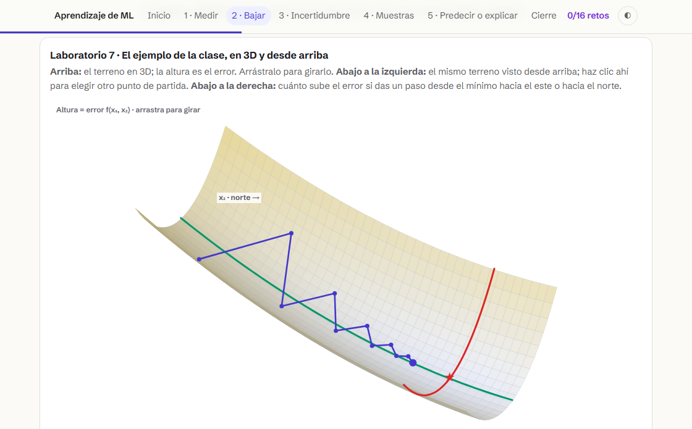

Machine learning · Econometría · Lecciones interactivas
Aprendizaje de Machine Learning y econometría

Pregunta
¿Cómo entender machine learning y econometría si uno viene de las humanidades: desde el problema, desde el código o desde la fórmula?
Resultado
Tres lecciones interactivas basadas en las clases del prof. Pavel Coronado Castellanos (Machine Learning, PUCP) y del prof. Alfonso Rodríguez (Econometría, QLAB–PUCP). Cada una parte de un problema peruano o cotidiano, explica el código de la clase línea por línea con su equivalente en Excel y llega a la fórmula. Incluye terrenos en 3D, la paradoja del modelo que acierta el 85 % sin detectar a nadie y la ENAHO 2023.
Autoría
Machine Learning. Las lecciones se basan en el material del prof. Pavel Coronado Castellanos para el curso «Introducción a Machine Learning para Ciencias Sociales», de la Diplomatura en Ciencia de Datos para las Ciencias Sociales y la Gestión Pública (Facultad de Ciencias Sociales, PUCP, 2026): sus diapositivas ML1 e Intro ML (Departamento de Economía y QLAB, PUCP), los cuadernos de la práctica dirigida 1 y su manual Machine Learning para las Ciencias Sociales (2026). Asistente del curso: Anderson Águila.
Econometría. La lección se basa en el material del prof. Alfonso Rodríguez para el «Taller de Introducción a la Econometría Aplicada» (QLAB–PUCP, 2026): sus diapositivas, sus módulos y su archivo de Stata, y los estudios peruanos de Amaya y otros (2021), Yamada (2007) y Bernal, Costa y Ritter (CIES), con datos de la ENAHO 2023 del INEI.
Los ejemplos de cada clase conservan la autoría de sus fuentes originales, y cada lección las cita una por una. Yo escribí el texto, los laboratorios y el código, junto con Claude Code, como material de estudio. Los errores son míos, no de los profesores ni de los autores citados.
Qué hice
Un sitio con una lección por clase. Cada lección convierte la sesión en un recorrido que parte de una pregunta concreta y llega a las fórmulas al final.
- ML 1 · Cómo aprende una máquina: cálculo, optimización y probabilidad desde ChatGPT y Netflix; 14 laboratorios, entre ellos el terreno del error en 3D y la regla de la cadena.
- ML 2 · Del cuaderno al modelo: la práctica dirigida en Python, línea por línea; el detective de datos, el umbral y la matriz de confusión, y una recta trazada a mano con datos peruanos.
- Econometría 1 · De una pregunta a una estimación con incertidumbre: causalidad con tres estudios peruanos, muestreo, error estándar, intervalos y pruebas, y el ejercicio de la ENAHO 2023 en Stata, traducido a Python y a Excel.
- En todas: retos con pistas, cajas «Recuerda» que forman una ficha imprimible, cada símbolo explicado y cajas «Puente con la filosofía».
Cómo se hizo
Partí de las diapositivas, los cuadernos de Python, el archivo de Stata, mis notas de clase y las lecturas. Recalculé en Python cada número antes de llevarlo a la página; así aparecieron hallazgos para discutir en clase, como el código 999999 de la ENAHO, que lleva el ingreso promedio de S/ 1 598 a S/ 27 997 si no se excluye. El sitio está hecho en HTML, CSS y JavaScript sin librerías, con KaTeX para las fórmulas, y lo revisé en computadora, en el ancho de un celular y en modo oscuro. El texto sigue el estándar de lenguaje simple ASD-STE100, adaptado al español.
Limitaciones
- Es material de estudio: no reemplaza a las clases ni a sus lecturas.
- Algunos ejemplos usan números inventados para ilustrar la idea, y cada lección lo indica.
- Las bases de práctica de los cursos no son cifras oficiales; los cálculos con datos del SIS y de la ENAHO son propios y preliminares (la ENAHO, sin factor de expansión).
Créditos
- Coronado, P. (2026). Diapositivas ML1 e Intro ML y práctica dirigida 1 del curso «Introducción a Machine Learning para Ciencias Sociales». PUCP.
- Coronado, P. (2026). Machine Learning para las Ciencias Sociales: con aplicaciones en Python (Material de Enseñanza n.º 16). Departamento de Economía, PUCP.
- Rodríguez, A. (2026). Clase 1 del Taller de Introducción a la Econometría Aplicada y archivo Modulo2.do. QLAB–PUCP.
- James, G., Witten, D., Hastie, T., Tibshirani, R. y Taylor, J. (2023). An Introduction to Statistical Learning with Applications in Python. Springer.
- Deisenroth, M. P., Faisal, A. A. y Ong, C. S. (2020). Mathematics for Machine Learning. Cambridge University Press. El ejemplo 7.1 es el del laboratorio 7 de la lección 1.
- Breiman, L. (2001). «Statistical Modeling: The Two Cultures». Statistical Science, 16(3).
- Athey, S. e Imbens, G. W. (2019). «Machine Learning Methods That Economists Should Know About». Annual Review of Economics, 11.
- Amaya, E., Cozzubo, A., Cueto, J. y Hernández, W. (2021), sobre Barrio Seguro; Yamada, G. (2007), sobre retornos a la educación; Bernal, N., Costa, J. y Ritter, P., sobre el SIS y la salud infantil; INEI, ENAHO 2023.
- La lista completa está en la sección «Créditos y autorías» de cada lección.